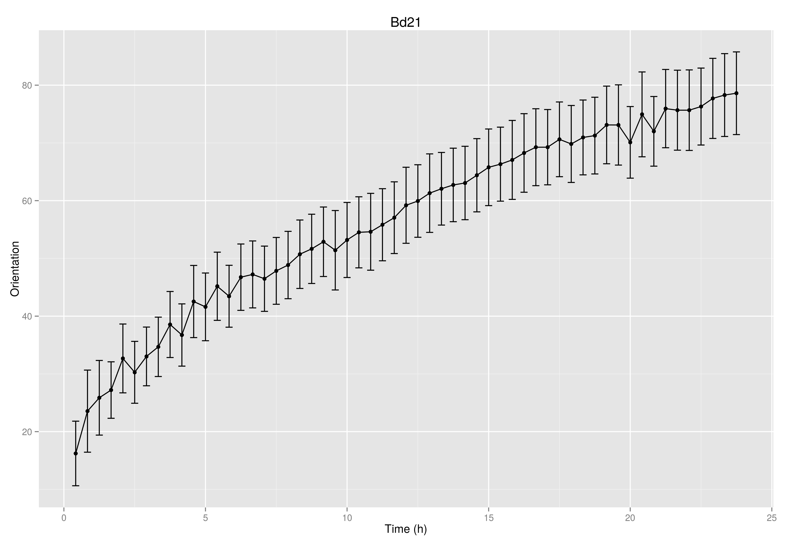
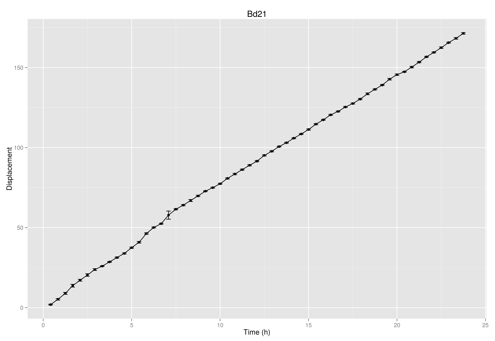
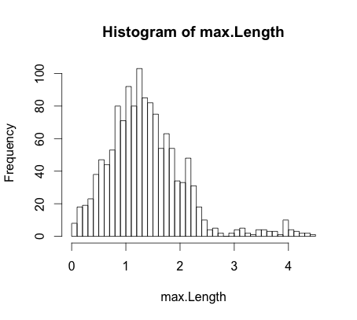
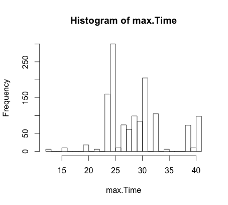

What this repository holds on Brachypodium distachyon root gravitropism, and what it does not.
Until 14 October 2026 this page showed a 15-accession curvature survey with an ANOVA, a GWAS Manhattan and QQ plot, a chromosome map of candidate loci, a cereal synteny table and a promoter-motif table. These were withdrawn: the curvature data were generated by the pipeline's demonstration mode from seeded random numbers, no genotype data or association test existed, and the other tables were typed in. The candidate genes are listed, with their verification status, in the AstroGrass database.
Plots of root orientation and root-tip displacement over time, one pair per accession (45 accessions), added to the repository as "Barker 2016" data. They are images only: the measurements behind them are not in this repository, so they are shown as received and no statistics are drawn from them. Select an accession:


Two summary histograms supplied with the same material, shown as received:

